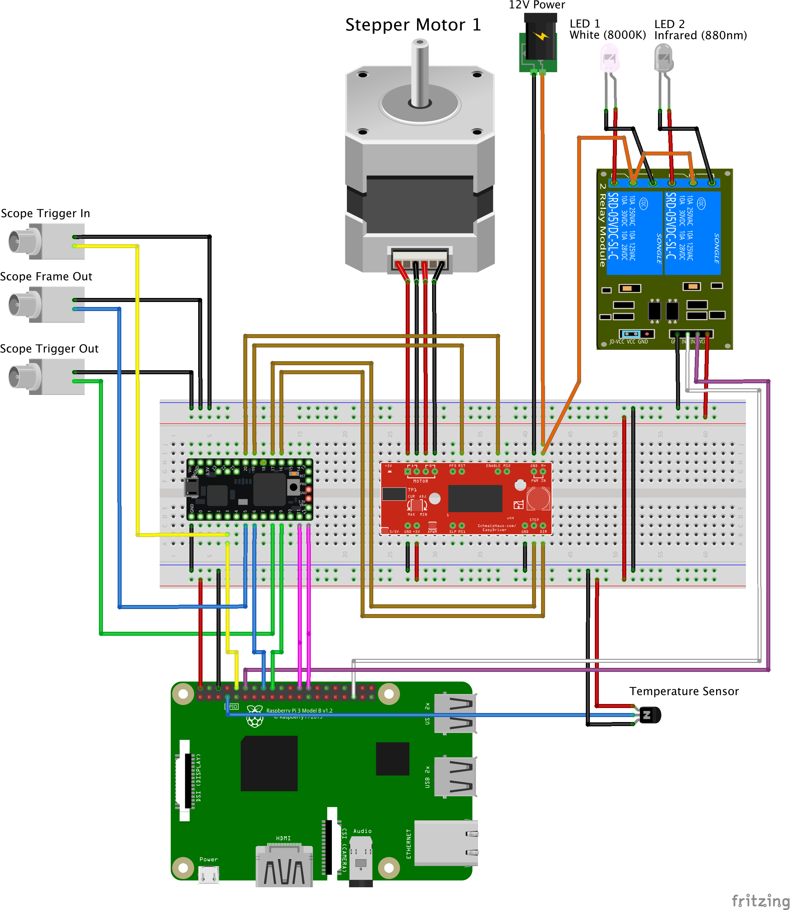

Wiring a treadmill
Overview
The treadmill stepper motor is controlled with a motor controller which is controlled by a Teensy. The Teensy is attached to the Pi via USB and code is uploaded using the command line program platformio. Once the code is running on the Teensy, the PiE server (in pie/pie_app/bTrial.py) uses a serial connection to set treadmill motor parameters. The Teensy logs all events within a trial to memory. At the end of a trial, the PiE server (again in pie/pie_app/bTrial.py) downloads all the events and saves them to a file.
The Teensy code is in pie/platformio/treadmill/src/treadmill2.cpp.
Attaching a Teensy to the Raspberry Pi
Attach a Teensy microcontroller to the Pi using a USB cable. Code is uploaded using a command line program called platformio. For how to do this, please refer to the pie/platformio readme.
Parts
See the main parts page, scroll down to the treadmill section.
Wiring
This is a full wiring diagram for microscope triggered video recording and using a Teensy and motor controller with a motorized treadmill. This wiring diagram is made with Fritzing, download the original pie.fzz file if you like.
There are lots of connections here, they can be conceptualized as 4 different subsystems.
- Wiring the Teensy to
Scope Trigger In,Scope Trigger Out, andScope Frame out. - Wiring the Teensy to the Raspberry Pi
- Wiring the stepper motor to the motor controller.
- Wiring the motor controller to the Teensy

Important
-
The Raspberry Pi is NOT 5V tolerant. Connecting standard lab equipment using 5V TTL pulses can damage the Pi. These 5V lines can be converted to 3V with a dedicated level shifter. Or, if you are using a Teensy, these 5V lines can pass through the Teensy which IS 5V tolerant but then outputs 3V which can go into the Raspberry Pi. In this way, the Teensy can act as a programmable level shifter.
-
The Easy Driver Motor Driver has a nasty feature. If you connect the 12V line to the board, the Stepper motor must be plugged in or else you will fry the driver board. Thus, check the stepper motor is connected before plugging in the 12V line and check the 12V line is not plugged in before disconnecting the stepper motor.
Pin table
Download this pdf for a table of all pin connections between the Raspberry, motor controller, and Teensy.
Serial interface
The treadmill2.cpp code sets up serial communication at 115200 baud.
All serial commands are a single line and must end in a carriage return (ascii 13). If a serial command is not understood by the treadmill code, it will return 'treadmill did not handle serial: ...'.
| Command | Actions | Returns |
|---|---|---|
| h | Help | A list of commands |
| v | Get version | Version |
| p | Get state | The state of all parameters as name=value pairs |
| d | Dump Trial | All events that occurred during the last trial, one line per event. Each event contains a comma separated list of (timestamp, event name, value). |
| start | Start Trial | None |
| stop | Stop Trial | None |
| set,name,value | Set a parameter (name) to a value (value). See table below. | name=value |
The command to 'set' a parameter (name) to a value (value) takes the following parameter 'names'. If a 'set' command is not understood, 'SetValue() did not handle ...' is returned.
| name | meaning | possible values |
|---|---|---|
| numEpoch | Number of epochs | Unsigned Integer |
| epochDur | Epoch duration (ms) | Unsigned Integer |
| preDur | Pre duration (ms). Specifies a duration before all epochs. | Unsigned Integer |
| postDur | Post duration (ms). Specifies a duation after all epochs. | Unsigned Integer |
| useMotor | Use the motor during a trial | String in ("motorOn", "") |
| motorDel | Delay before turning the motor in an epoch (ms) | Unsigned Integer |
| motorDur | Duration to turn the motor in an epoch (ms) | Unsigned Integer |
| motorSpeed | Speed to turn the motor(au) | Unsigned Integer, 100...700 from slow to fast. |
| arm | Arm the treadmill to start a trial in response to changes in startTrialPin pin | String in ("True", "False") |
| duringPulse | What to do with motor during motorDur | String in ("Rotate", "Locked", "Free") |
| betweenPulse | What to do with motor outside of motor dur | String in ("Locked", "Free") |
Some examples,
- To set the number of epochs to 5, use
set,numEpoch,5. - To arm the treadmill, use
set,arm,True - To have the treadmill free to turn between pulses, use
set,betweenPulse,Free
Using the serial interface on the command line
A simple yet esoteric command line program called screen can be used to establish a serial connection with an Arduino/Teensy on the command line.
Install screen
sudo apt-get install screen
Use screen to connect to serial port. This assumes your Arduino/Teensy is at /dev/ttyACM0.
screen /dev/ttyACM0 115200
Enter some serial commands manually
h
v
set,numEpoch,5
d
You might have to hit return to get it going. Quit screen with ctrl+a then type : then type quit